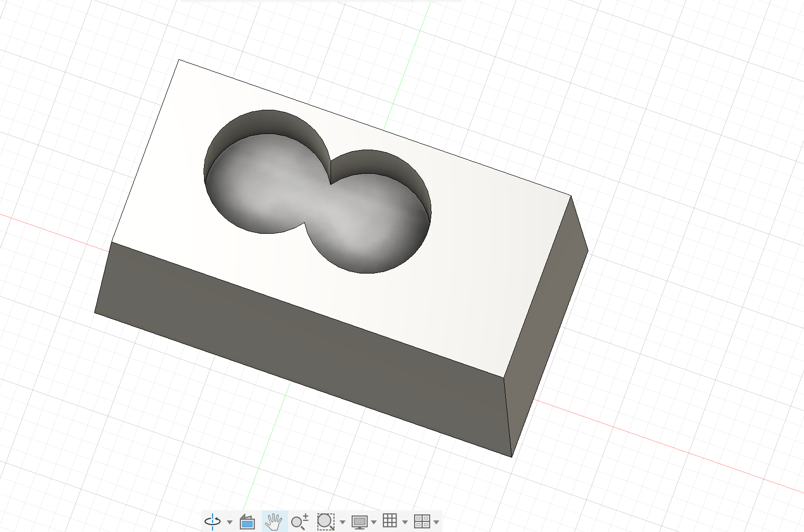
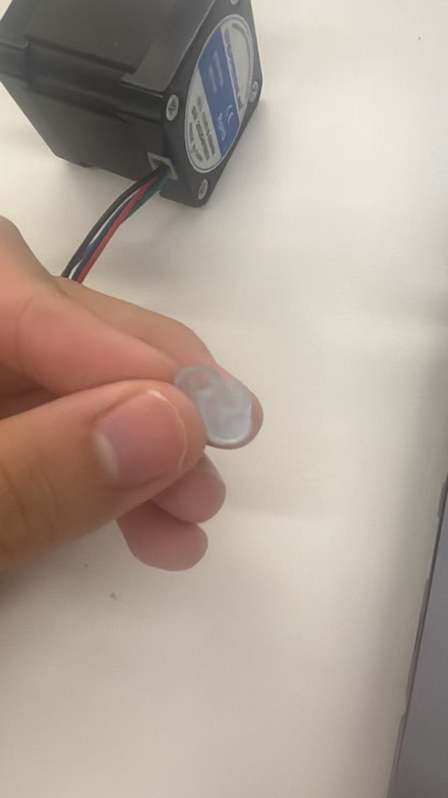

Weekly Lab Notes & Work
CNC Milling & Mold Casting
I designed a two-cavity mold inside Fusion 360 for casting silicone parts for my assistive eating device prototype. The design features connected double cavities to form the soft silicone gripping component.
3D Mold Design in Fusion 360

This image displays the final mold geometry prepared for CNC machining.
The CAD model was exported as an STL file for CNC milling. After machining the mold blank, I poured liquid casting material into the mold cavity to fabricate the flexible silicone component for the spoon-locking mechanism.
Final Cast Silicone Part

This is the completed soft component cast using the CNC machined mold.